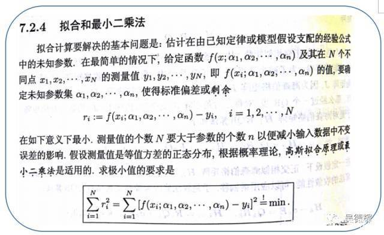
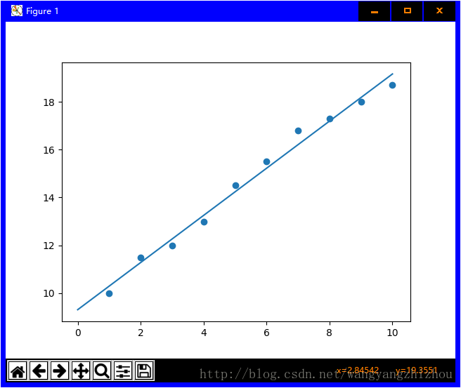
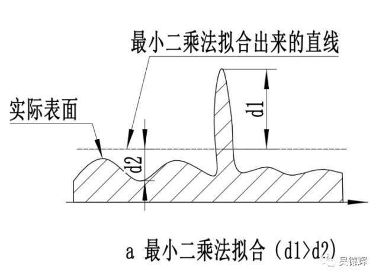

LinearRegression算法
学习参考来源
一、最小二乘法的拟合原理

最小二乘法定义如上图所示，但是初看可能会有点懵，上面的表示是啥意思，好接下来总结下我的理解
最小二乘法（又称最小平方法）是一种数学优化技术，除了能拟合直线还能拟合曲线问题。
书中截取部分如果可以这样理解αi，如果是二次项的话y=α1x2+α2x+α3，知道了吧，就是一个二项式子中的待解参数。
本文为了推导和笔记的简单化，直接以拟合直线 f(x;a,b):y=ax+b
1.1 代数推导：
- [1]. 假设拟合直线 f(x;a,b):y=ax+b
- [2]. 已经由n个样本(xn,yn)
- [3]. 误差ei=yi−(axi+b)
- [4]. 当S=∑i=1nei2为最小值时，即得到的a,b参数就是最小二乘法得到的解.
如何求解这些参数（a，b）
∂b∂S=−2(∑i=1nyi−nb−a∑i=1nxi)
∂a∂S=−2(∑i=1nxiyi−b∑i=1nxi−a∑i=1nxi2)
分别令上式中对a,b求偏导数的有点等于0,以此求取对a,b的最值.有：nx¯=∑i=1nxi,ny¯=∑i=1nyi
得到：
a=∑i=1n(xi−x¯)2∑i=1n(xi−x¯)(yi−y¯)
b=y¯−ax¯
a=n∑xi2−(∑xi)2n∑xiyi−∑xi∑yi
b=n∑xi2−(∑xi)2∑xi2∑yi−∑xi∑xiyi
1.1.1 代数推导的代码实现
import numpy as np
import matplotlib.pyplot as plt
def calcAB(x,y):
n = len(x)
sumX,sumY,sumXY,sumXX =0,0,0,0
for i in range(0,n):
sumX += x[i]
sumY += y[i]
sumXX += x[i]*x[i]
sumXY += x[i]*y[i]
a = (n*sumXY -sumX*sumY)/(n*sumXX -sumX*sumX)
b = (sumXX*sumY - sumX*sumXY)/(n*sumXX-sumX*sumX)
return a,b,
xi = [1,2,3,4,5,6,7,8,9,10]
yi = [10,11.5,12,13,14.5,15.5,16.8,17.3,18,18.7]
a,b=calcAB(xi,yi)
print("y = %10.5fx + %10.5f" %(a,b))
x = np.linspace(0,10)
y = a * x + b
plt.plot(x,y)
plt.scatter(xi,yi)
plt.show()
1.2 矩阵推导
对于y=ax+b,转为向量的形式为
W=[w0w1],X=[1x1]
于是：
y=w1x1+w0=WTX
损失函数为:
L=n1i=1∑n(yn−(WTX)2)=n1(y−XW)T(y−XW)
最后可化为
n1XTWTXW−n2XTWTy+n1yTy
令偏导为0
∂W∂L=n2XTXW−n2XTy=0
另外：
(XTX)−1XTX=E,EW=W,则
(XTX)−1XTXW=(XTX)−1XTy,W=(XTX)−1XTy
1.2.1 代码实现：
import numpy as np
import matplotlib.pyplot as plt
x = [1,2,3,4,5,6,7,8,9,10]
y = [10,11.5,12,13,14.5,15.5,16.8,17.3,18,18.7]
A = np.vstack([x,np.ones(len(x))]).T
a,b = np.linalg.lstsq(A,y)[0]
print("y = %10.5fx + %10.5f" %(a,b))
x = np.array(x)
y = np.array(y)
plt.plot(x,y,'o',label='data',markersize=10)
plt.plot(x,a*x+b,'r',label='line')
plt.show()
拟合的效果（蓝线）

1.3 小结

二、线性回归
线性回归的目的是找到一个与这些数据最为温和的线性函数，用来预测或者分类，主要解决线性问题。
一般来说，线性回归问题都可以通过最小二乘法来求出方程。线性回归属于监督学习,因此方法和监督学习应该一样，先给一个训练集，根据这个训练集学习出一个线性函数，然后测试这个函数训练的好不好（拟合是否恰当）。Cost Function 越小的函数，说明训练数据拟合程度越好。
f(x)=ω1x1+ω2x2+ω3x3+...+ωdxd+b
一般向量形式写为：
f(x)=ωTx+b
其中的ω=(ω1;ω2;ω2;...ωd)
x1,x2,...xk是一组独立的预测变量
ω1,ω2,...ωk为模型从训练数据中学习得到的参数，或称赋予每个变量的权值。
b是一个学习到的参数，这个现行函数中的常量也称模型的偏置（Bias）
- 根据输入属性可分为一元，二元......多元线性回归。
多元数据集的定义如下：
D=[xi,j,yi]，其中i,表示数据集第i位序列的值，而j则表示在第i位x的属性是j种属性，即数据集中，x(i,j)，i维行，j维纵坐标的矩阵。
即数据集j元的属性矩阵表示为：
⎣⎢⎢⎡x1,1x2,1...xi,1x1,2x2,2...xi,2............x1,j−1x2,j−1...xi,j−1x1,jx2,j...xi,j⎦⎥⎥⎤
比如3元的表示一个西瓜好坏，【hue, root, echo】，加入预测函数的参数已经求得ω=[0.2,0.5,0.3],b=1，则好瓜（good)函数fgood(x)=0.2⋅xhue+0.5⋅xroot+0.3⋅xecho+1
2.1 一元线性回归
属性：
这里考虑一元的情况则数据集为： D=[xi,yi]i=1m,即上面矩阵表示的j元数据集中j=1，现在我们来尝试一元的线性回归。
- [1] 假设我们预测函数形式：f(xi)=ωxi+bi,使得f(xi)≈yi.
接下来我们引入上面的最小二乘法求参数ω,b.
eω∗,b∗=arg(ω,b)min∑i=1m(f(xi)−yi)2
- [3] 对上式e的函数分别对ω,b求偏导，对偏导结果赋值0，求ω,b值。
- [4] 偏导数
∂ω∂Eω,b=2(ω∑i=1mxi2−∑i=1m(yi−b)xi)
∂b∂Eω,b=2(mb−∑i=1m(yi−ωxi))
- [5] 上一步骤中的偏导数都设为零，以此来求得ω,b.
ω=∑i=1mxi2−m1(∑i=1mxi)2∑i=1myi(xi−x¯)
b=m1∑i=1m(yi−ωxi),x¯=m1∑i=1mxi,x¯为序列x的均值。
这里一元的线性回归，用最小二乘法求解的参数估计，称为线性回归模型的最小二乘法“参数估计”(parameter estimation).
2.2 多元线性回归
类似一元，但是求解 估计的参数矩阵ω,b，就需要全部看成矩阵的求解方法求出。见最小二乘法矩阵推导那一节，不再具体推推导了，在2.1节基础上明白线性回归，多元回归思想即可明白。